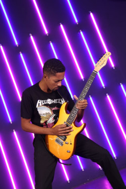

Minhas Redes Sociais
Quem sou eu ?
Meu nome é Igor Alexandre Luiz, sou músico, guitarrista e vocalista na banda In-Reverse. Sou envolvido com música a mais ou menos 16 anos e sou apaixonado no que faço. Atualmente estou estudando Programação como mudança de carreira. Hoje, estudo HTML e CSS com o professor Gustavo Guanabara.
Como falar comigo ?
 /igoralexandreluiz - Acesse meu Facebook
/igoralexandreluiz - Acesse meu Facebook
 /igoralexandretv - Me siga no Instagram
/igoralexandretv - Me siga no Instagram
 /igoralexandretv - Se inscreva no meu canal no Youtube
/igoralexandretv - Se inscreva no meu canal no Youtube
Clique aqui para ver as minhas fotos